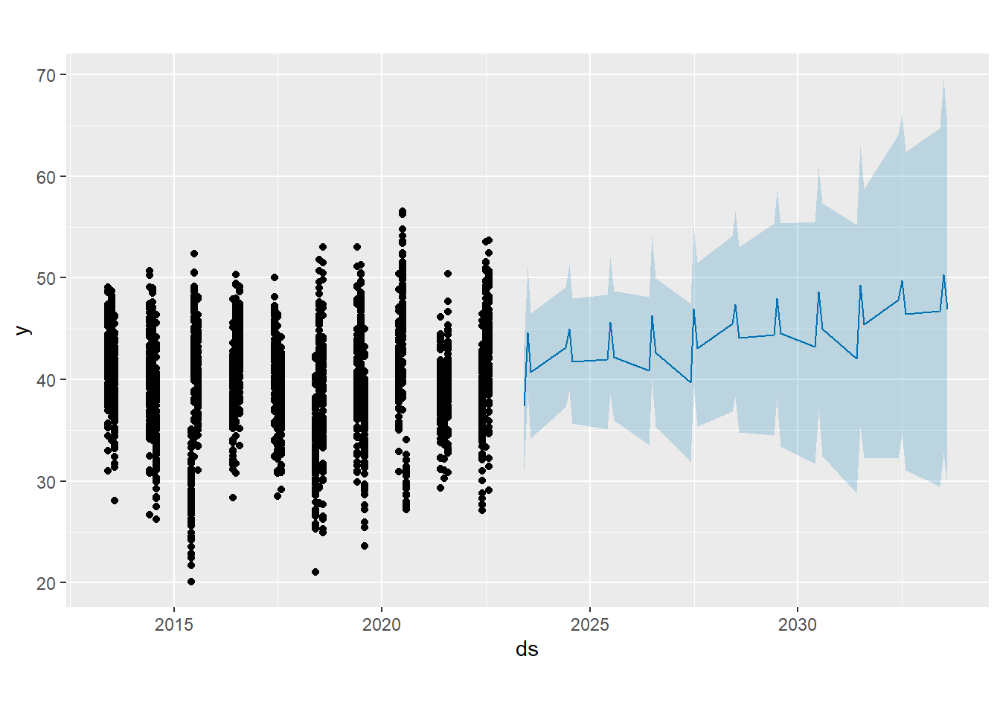

library(dplyr)
library(prophet)
final_data = read.csv("final_data.csv")
final_data = final_data |>
filter(Lst > 20)
future_dates_jja = data.frame(ds = as.Date(paste0(rep(2023:2033, each = 1), "-", rep(6:8, each = 11), "-01"))) |>
arrange(ds)
prophet_data = final_data |>
select(ds = Date, y = Lst)
prophet_model = prophet(prophet_data)
summer_prediction = predict(prophet_model, future_dates_jja)Propheat Forcasting Procedure
Forecasting is a common data science task that helps with prediction, planning, goal setting, and anomaly detection. However, producing reliable and high-quality forecasts can be challenging, especially when dealing with a wide range of time series and a shortage of experts in time series modeling. To overcome these challenges, Facebook scientists developed the Prophet forecast procedure. (Taylor & Letham, (2018))
Prophet is a powerful tool for forecasting time series data. It employs an additive model that captures non-linear trends, yearly, weekly, and daily seasonality, and holiday effects. It is particularly well-suited for time series data with strong seasonal effects and a significant amount of historical data. With Prophet, you can easily obtain accurate forecasts without needing manual adjustments, even when dealing with messy data. It can easily handle outliers, missing data, and sudden changes in your time series, making it an excellent choice for time series forecasting. (Facebook Open Source, (n.d.))
For this seminar research, the Prophet forecasting procedure was chosen due to its simplicity and flexibility in handling data, as well as the noticeable improvement that was achieved in nonlinear regression by using random forest. Despite gaps in the data between years and repeated values for each month from multiple synthetic turf fields, the Prophet model can still accurately predict future LST values.
For the Prophet forecast procedure to function accurately, it is necessary that the “final_data” data frame is loaded properly, excluding any outliers. Furthermore, a new data frame has been created to include future dates of the summer months in the next decade. Since the training data used for the Prophet forecast procedure spans a decade, it is reasonable to predict the following decade.
Based on the plot, it is evident that the synthetic turf fields will experience a rise in temperature during the future summer months. The lowest predicted temperature for these fields is 37.34 degrees Celsius, while the highest predicted temperature is 50.35 degrees Celsius.
library(ggplot2)
summer_prediction$ds = as.Date(summer_prediction$ds)
lowest_value = summer_prediction |>
filter(yhat == min(yhat))
highest_value = summer_prediction |>
filter(yhat == max(yhat))
ggplot(data = summer_prediction, aes(x = ds, y = yhat)) +
geom_point(size = 3, color = "gold", alpha = 0.7) +
geom_smooth(method = "loess", se = FALSE, color = "purple") +
labs(x = "Date", y = "yhat (Forecasted Value)",
title = "Prophet Forecasted Values with Smooth Line") +
scale_x_date(date_breaks = "1 year", date_labels = "%Y") +
theme_minimal() +
theme(axis.text.x = element_text(angle = 45, hjust = 1)) +
geom_text(data = lowest_value, aes(x = ds, y = min(yhat) - 2, label = paste("Lowest:", round(yhat,2))), hjust = 0) +
geom_text(data = highest_value, aes(x = ds, y = min(yhat) - 1, label = paste("Highest:", round(yhat,2))), hjust = 1)The second plot shows a predicted rise in temperature during the upcoming summer months, which is in line with the trend shown in the first plot. Additionally, the plot displays a range of values in light blue that represent the confidence interval within which the predicted temperatures are expected to fall. According to the Prophet forecast procedure, there is a probability that the synthetic turf fields could reach a high temperature of approximately 50 to 70 degrees Celsius within the confidence interval in the next decade.
plot(prophet_model,summer_prediction)